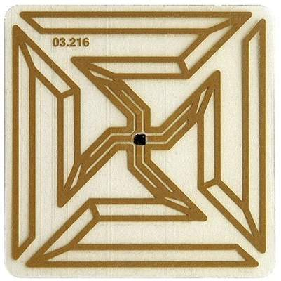

[Previous entry: "Patriot Act used to persecute artists"] [Main Index] [Next entry: ""Beating Specialist Baker""]
06/03/2004 Archived Entry: "RFID Swastika"

I don't usually hang out at Rense.com. A little too conspiratorial for my tastes. But apparently the respectable Ms. De Coster might. It was an entry on her blog that led me to the Hitler chip.
Definitely another illustration of how "The truth is stranger than fiction -- and harder to make up."
Posted by Claire @ 01:00 PM CST
Link